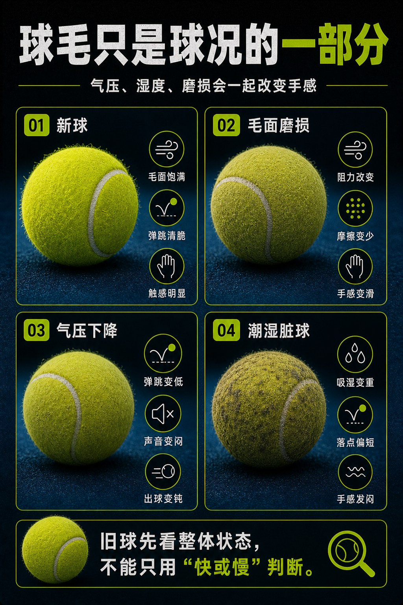
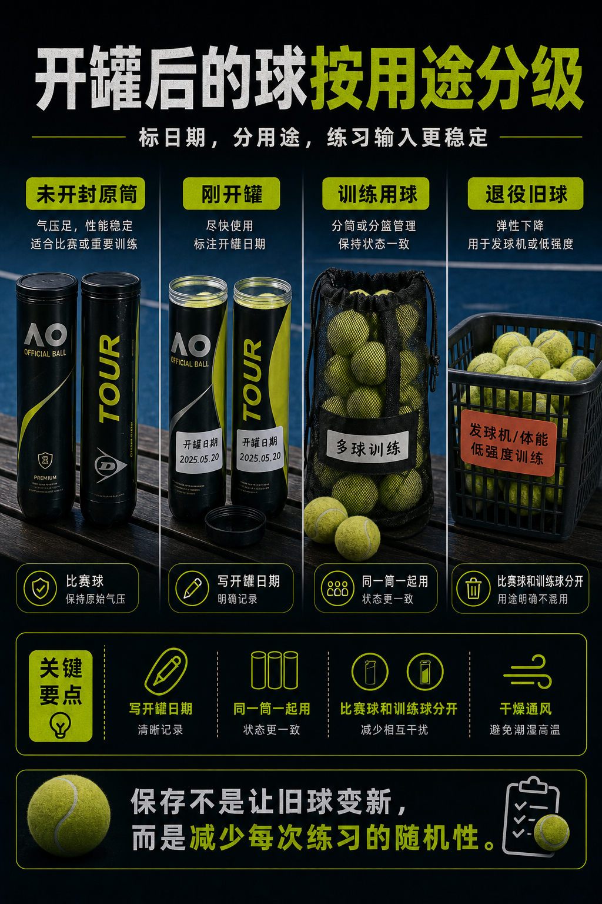
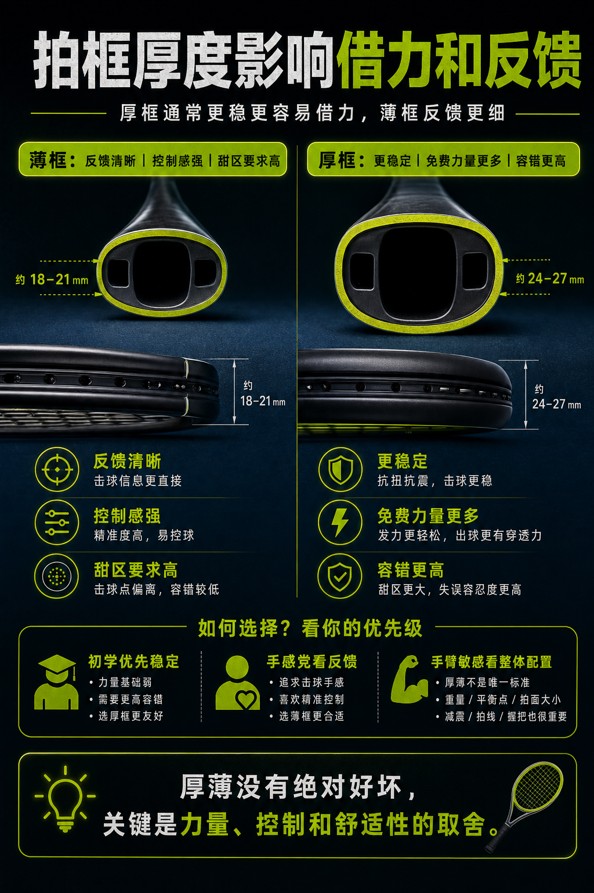
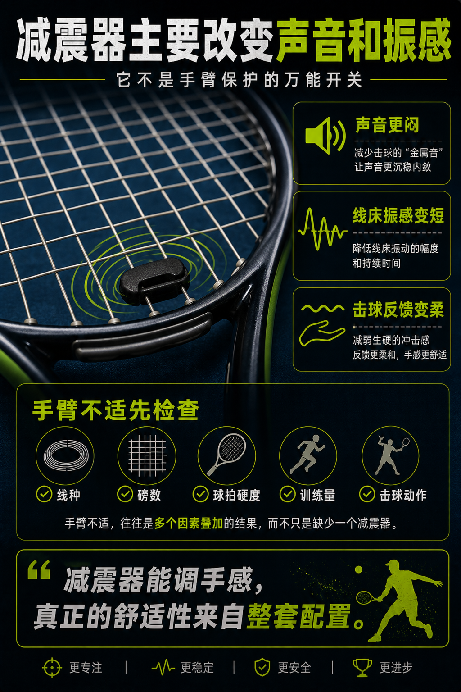
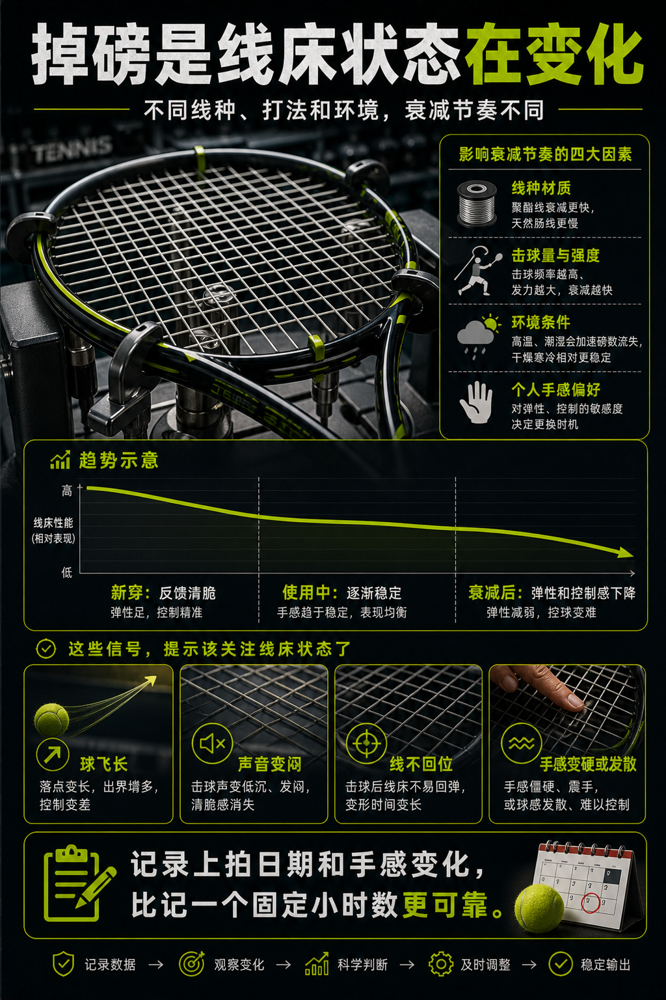
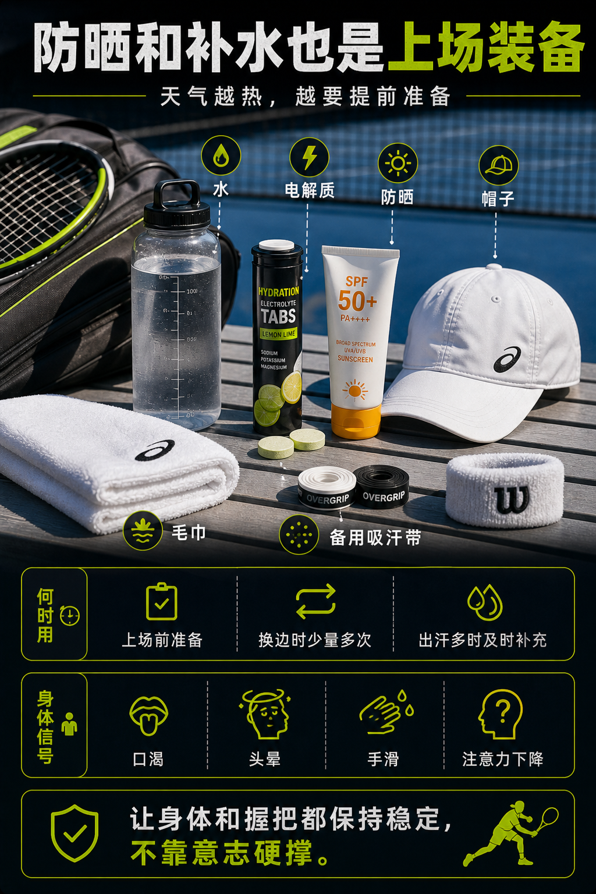

装备百科候选图最终确认
这 6 张图已经通过 Codex 初审和 Gemini 外部事实审稿；此页只用于用户最终视觉确认。通过后再运行 finalize 脚本升为 approved。
总数 62
已批准 56
候选 6
需重做 0

1. 球毛决定空气阻力和咬球感
Image Candidate- 避免“旧球毛磨平 = 一定更快”。
- 区分球毛、气压和湿度。
- 文字无内部矛盾。
用户最终通过

2. 罐装球也需要保存逻辑
Image Candidate- 像网球装备管理，不像生活收纳。
- 原筒日期、训练分级和用途标签清楚。
- 不承诺保存能让旧球变新。
用户最终通过

3. 拍框厚度改变力量来源
Image Candidate- 厚框/薄框取舍准确。
- 没有“厚框形变大、储能更多”的错误机制。
- 适合作为装备百科入门图。
用户最终通过

4. 减震器主要改声音和手感
Image Candidate- 明确减震器不是手臂保护万能开关。
- 不适排查回到线种、磅数、球拍硬度、训练量和动作。
- 没有 KG/kg 单位误导。
用户最终通过

5. 掉磅会让线床换性格
Image Candidate- 只表达趋势，不做伪精确曲线。
- 没有通用百分比和固定小时数。
- 判断信号可执行：飞长、声音、回位、手感。
用户最终通过

6. 防晒和补水也是装备
Image Candidate- 从健康处方回到上场装备准备。
- 没有固定补水毫升数。
- 清楚表达换边少量多次、出汗及时补充和手滑/注意力信号。
用户最终通过